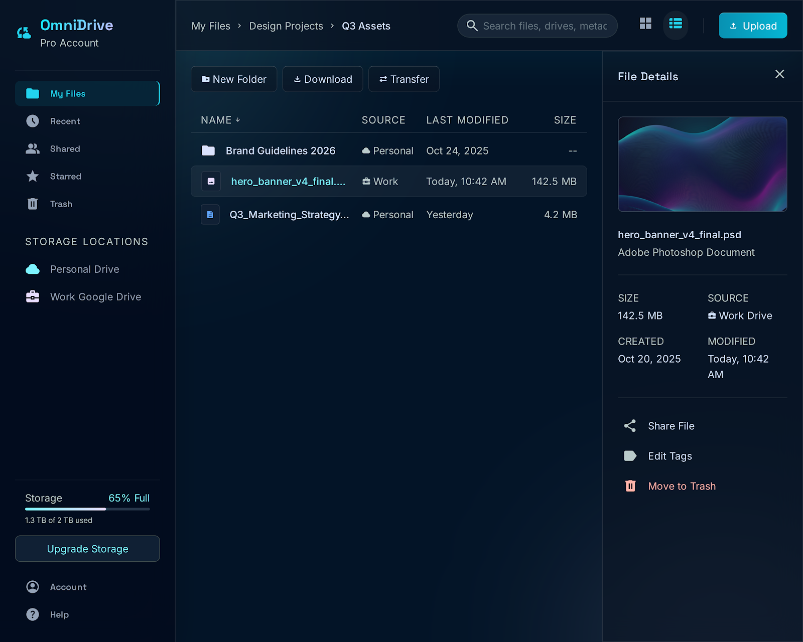

Unified browsing
Move through all linked Google Drive accounts, individual account scopes, folders, categories, list view, or grid view without switching browser tabs.
Desktop app for your cloud files
OmniDrive brings multiple Google Drive accounts into a single desktop workspace with fast local indexing, secure OS keyring storage, file previews, transfers, and Google Drive-style browsing.

Built for real file work
OmniDrive is not another cloud storage account. It is a practical desktop layer over the accounts you already use.
Move through all linked Google Drive accounts, individual account scopes, folders, categories, list view, or grid view without switching browser tabs.
Local metadata caching makes browsing feel responsive and gives the app a stable snapshot to work from between sync operations.
Preview common file types in the app, cache preview assets safely, and keep context while deciding what to move, download, share, or remove.
Download, upload, rename, delete, share, create folders, and transfer files across accounts through tracked background jobs.
Surface account health, large-file cleanup opportunities, duplicate candidates, and low-space signals from the same local model.
Connect Google Photos through the picker-based flow while keeping expectations clear: Photos support follows Google's API limits.
Privacy posture
OmniDrive does not run a separate cloud backend for your data. It connects from your desktop app, stores OAuth token material through the operating system keyring, and keeps local app state on your machine.
Get OmniDrive
Install OmniDrive, connect your Google accounts, and start browsing your cloud storage from one desktop file cockpit.